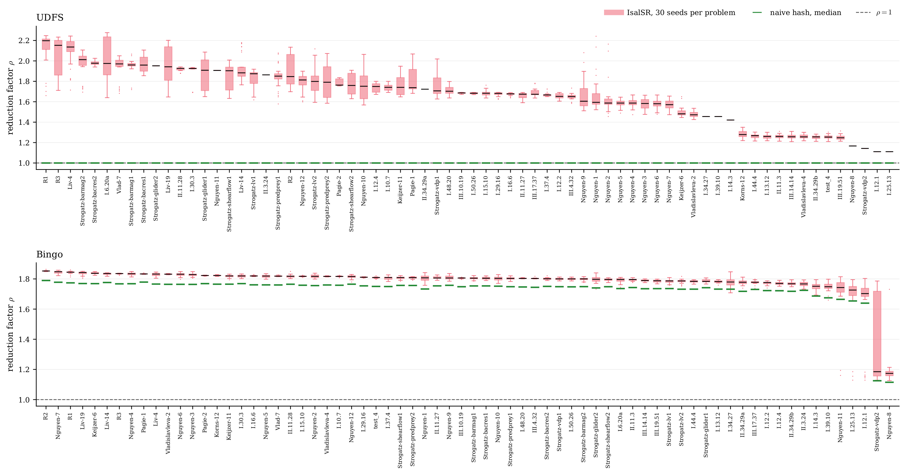
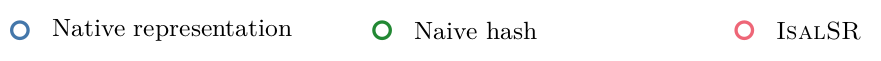
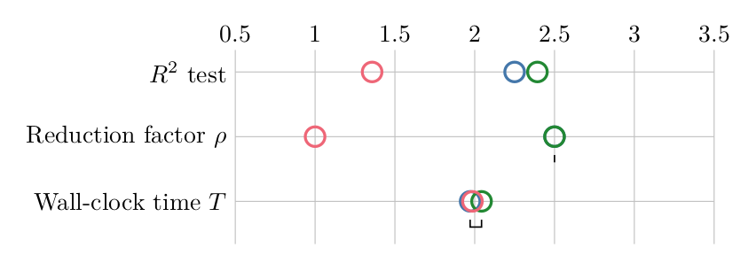
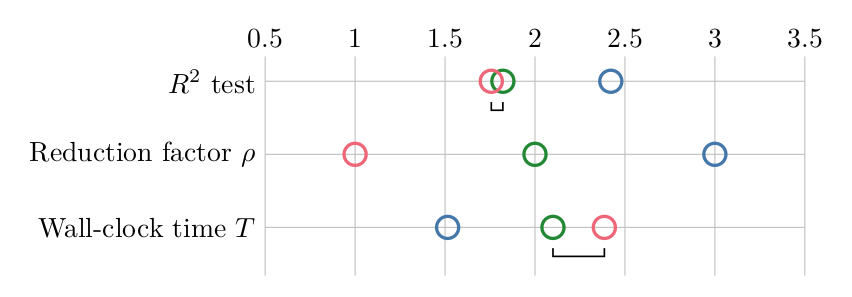
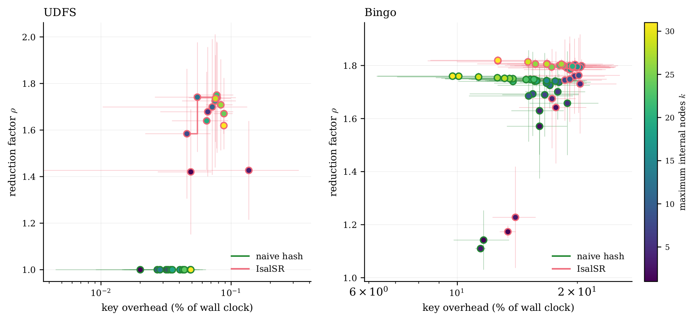

Results
IsalSR is evaluated by integrating it into two established symbolic regression solvers with contrasting search strategies, and comparing three representations of the candidate stream within each. Everything on this page is Section 5 of the paper.
The Three-Arm Design
Reporting IsalSR against the unmodified hosts alone would not separate isomorphism-invariant canonicalization from a plain equality check on a serialized graph. Every comparison therefore runs three arms that differ only in the equivalence relation applied to the candidate stream. They share the solver, its configuration, the data and the seed.
Native representation
The host solver under its own representation, with no deduplication beyond whatever it already performs. Computes no key, so by construction.
Naive hash
A fixed-order serialization key taken from each host's own stored structure — Bingo's command-array row order, UDFS's computation-graph node order. Sound, cheap, and incomplete.
IsalSR
The fast canonical string, computed on the fly at the evaluation boundary. If the string has been seen, the candidate is a structural duplicate and its evaluation is skipped.
The key must be taken from the host's stored structure and not from the converted labeled DAG: the conversion imposes a node order of its own, so a key computed after it would merge candidates the host itself keeps apart, making the comparator look stronger than it is.
UDFS (IJCAI 2024)
Systematically enumerates computation graphs ordered by structural complexity, in a fixed order. Hierarchical mode, 2 substructure levels, 200,000 enumeration orders, 5 or 7 calculation nodes, stop threshold 10−10 MSE. Its operator table has no Pow.
Bingo (NASA)
Evolves stack-based programs by age-fitness Pareto optimization with Levenberg–Marquardt constant fitting; its stochastic operators regenerate previously visited structures. Population 500, stack depth 32, crossover and mutation 0.4 each, MSE fitness, termination time-controlled.
Neither host searches over directly. Integration requires only that every operator a host can place have an image in the label set: Sub and Div are host primitives encoded as and at the boundary, and UDFS's identity nodes are contracted onto their operand. Containment is verified before each run.
Three-Axis Summary
| Host | Search space | Regression quality | Computational cost | |||||||
|---|---|---|---|---|---|---|---|---|---|---|
| Red. | (NA/NH/IS) | OH | ||||||||
| UDFS | 1.66 ± 0.26 | 1.00 ± 0.00 | 38.1% | 0.766 / 0.758 / 0.783 | +0.41 | 2.0×10−9*** | 0.126 ms | 727.30 ms | 0.04% | 1.00 |
| Bingo | 1.79 ± 0.09 | 1.73 ± 0.10 | 43.7% | 0.976 / 0.975 / 0.976 | +0.08 | 7.5×10−4*** | 0.074 ms | 1.48 ms | 16.11% | 0.72 |
Axis 1 — Search Space Reduction
The largest effect sizes are here. IsalSR reduces evaluations on every problem of the suite, under both hosts. UDFS attains a mean reduction factor of 1.66 ± 0.26 across 2,100 seed–problem cells, eliminating 38.1% of evaluations; Bingo 1.79 ± 0.09 across 2,100 cells, eliminating 43.7%. Per-problem means range over on UDFS and on Bingo.
Which contrast carries the test. The native arm computes no key, so there by construction: a test against it would compare a random variable with a constant no experiment can move. That contrast is reported descriptively — exceeds 1 on 70 of 70 problems under both hosts, at a mean per-problem difference of +0.66 on UDFS and +0.79 on Bingo — and the inferential statement is IsalSR against the naive hash, where both arms compute a key and both reduction factors are measured. There the paired test across problems returns a Cohen's d of 2.54 on UDFS (95% bootstrap CI [+2.12, +3.16], one-sided ) and 7.05 on Bingo. Both sit at the floor of the Wilcoxon signed-rank statistic for , which is when every problem falls on the same side; the test cannot resolve further, so the effect size carries the magnitude.

Axis 2 — Regression Quality
IsalSR is a structural deduplication layer, not a regression optimizer, so the question is whether it preserves quality across the portfolio and improves it where the budget binds. All three arms receive the same wall-clock budget, so the IsalSR arm trades search time for canonicalization — a deliberately conservative protocol.
On UDFS, yields a mean per-problem difference of +0.0171, a Cohen's d of +0.41 with CI [+0.31, +0.59], and a one-sided of . On the mean difference is +0.0153 at , and on the test returns . On Bingo the per-problem effect is +0.08 at a mean difference of +0.0006 and : Bingo saturates at on the easier problems, where the budget is not the binding constraint, so a portfolio-level difference there can only be carried by the problems that remain unsolved within it.
Reading the individual targets: on UDFS the largest gains fall on I.30.3 (+5.59), II.11.28 (+3.34), III.17.37 (+2.68) and I.15.10 (+2.49), and the largest shift toward the baseline on Pagie-1 (−3.68). On Bingo they fall on I.16.6 (+1.16), test_4 (+1.03) and I.48.20 (+1.03), with R2 (−0.55) shifting furthest the other way. These are descriptive; the inference rests on the portfolio-level test.



Figure 3 of the paper. Mean ranks over the 70 problems on three axes, with Nemenyi post-hoc bars (, Holm adjustment). The two hosts are ranked separately, not pooled: pooling lets the difference between the solvers absorb almost the whole axis — on the three Bingo arms take mean ranks 1.95 to 2.73 and the three UDFS arms 4.20 to 5.10 — and widens the critical difference from 0.40 to 0.90, which decides whether the arm contrast is resolvable at all.
On , IsalSR is the only UDFS arm that separates, at mean rank 1.36 against 2.25 for the native representation and 2.39 for the naive hash, which the post-hoc test does not distinguish from each other. On Bingo the two deduplicating arms are indistinguishable from each other, at 1.76 and 1.82, and both are separated from the native representation at 2.42.
What Only an Isomorphism Test Reaches
The naive hash arm holds the deduplication idea fixed and varies only the completeness of the key. The share of removable redundancy that a fixed-order serialization cannot reach follows from the two measured reduction factors,
and the two hosts sit at opposite ends of it, for structural reasons. A deterministic enumerator visits each stored structure once, so its exact repeats are rare and whatever redundancy it carries is node renumbering, which only an isomorphism test detects. An evolutionary search re-derives genomes that agree entry for entry, and an equality check catches those.
| Host | [min, max] | ||||
|---|---|---|---|---|---|
| UDFS | 110 | 1.664 | 1.000 | 38.1% | 1.000 [1.000, 1.000] |
| Bingo | 3,985 | 1.785 | 1.727 | 1.9% | 0.047 [0.034, 0.266] |
On UDFS the naive hash merges nothing at all — on all 2,100 of its cells — so the arm pays a key on every candidate, recovers no redundancy, and attains an slightly below the unmodified host. On Bingo the same key recovers 95.3% of what canonicalization removes, and is the better engineering choice there. Both keys are sound and can never merge two structurally distinct candidates; they differ only in completeness.
| Host | Ratio | OHNH | OHIS | ||
|---|---|---|---|---|---|
| UDFS | 0.046 ms | 0.135 ms | 3.1× | 0.02% | 0.04% |
| Bingo | 0.036 ms | 0.069 ms | 1.9× | 13.32% | 16.11% |
Axis 3 — Computational Cost
The net benefit is governed by the ratio , and the two hosts differ on it by more than three orders of magnitude.
For UDFS, canonicalization takes a median of 0.126 ms while fitness evaluation is dominated by the per-batch sweep over the training set and takes a median of 727 ms. The median overhead is 0.04%, with a 95th percentile of 0.15%. The pooled median search-only speedup of 1.00 measures the budget, not the method: 1,727 of the 2,100 UDFS cells exhaust the 12-hour budget in both arms, where by construction. On the 373 cells in which at least one arm finished first, the median is 1.96. End to end, the IsalSR arm is the faster of the two on 29 of the 70 problems.
For Bingo, both quantities are sub-millisecond, at 0.074 ms and 1.48 ms, so the median overhead is 16.1% and canonicalization is no longer amortized by the evaluator. Here the evaluations deduplication removes are not worth the canonicalization spent to find them: the search-only speedup is 0.72, the median seed-matched slowdown is 1.45×, and IsalSR finishes ahead of its baseline on only 13 of the 70 problems. The loss is neither marginal nor confined to a subset, and the critical-difference diagram separates the native representation from both deduplicating arms on that axis.
Which problems come out ahead is not predicted by . Across the Bingo suite the correlation between a problem's mean and its median is +0.04, and barely varies on that host, sitting within 0.09 of 1.79 on 66 of the 70 problems. Run length does correlate, at against the log of the native arm's wall clock: the deduplicated arm gains on the problems that occupy the budget and loses on those that converge in seconds, where the key is paid on every candidate of a short run.

The practical criterion is therefore at the level of the solver and the dataset, not the problem: IsalSR pays off when fitness evaluation dominates canonicalization — large training sets, complex expressions, simulation-based evaluation. Where evaluation is cheap, it preserves regression quality and reshapes the search trajectory at a wall-clock cost the practitioner pays.
Benchmark Suite
The 70-problem suite is assembled in three stages, with all problems retained and no post-hoc filtering. A candidate enters only if it satisfies four predeclared conditions: published provenance in a peer-reviewed source used by at least two independent SR studies; representability of the published closed form within ; published evidence that recovery hinges on operator topology rather than constant fitting; and complementary coverage of at least one difficulty axis not already represented.
| Stage | Composition | Problems |
|---|---|---|
| Core | The 12 Nguyen benchmarks and a 10-problem subset of AI Feynman | 22 |
| Extension | Vladislavleva, Korns, Keijzer, Pagie, the DSO/Koza rational benchmarks, DSO-Livermore and extended Feynman. Spans , | 28 |
| Coverage | All 14 ODE-Strogatz datasets of SRBench's ground-truth track, taken in full with no filter, plus 6 further AI Feynman equations drawn uniformly at random from the 92 eligible ones, under a rule fixed and recorded before any was run | 20 |
One caveat travels with the ODE-Strogatz component: those datasets are 400-row trajectories under SRBench's random split, so temporally adjacent and nearly identical states can fall on opposite sides of it, inflating the absolute attainable on those 14 problems. It does so identically in all three arms, so it cannot bias the paired contrast.
Statistical Protocol
The inferential claim is at the level of the benchmark portfolio, not of any individual problem. Following Demšar's protocol for comparing two methods across a benchmark suite, each problem contributes a single paired observation: the difference of its per-seed means, computed under identical splits.
- Marginal normality of is screened with Shapiro–Wilk; the test is then a one-sample -test or the Wilcoxon signed-rank statistic, one-sided at .
- Effect size is the standardized mean difference with a bias-corrected percentile bootstrap CI over 10,000 resamples.
- One statistic and one -value per (host, metric) pair, so no multiple-comparison correction is needed at the family level; with three arms the pairwise family has three members and Holm divides by three.
- The omnibus comparison across arms is a Friedman test with Nemenyi post-hoc, run within each host.
- Pairing is by seed number, not by position in the two seed lists, so a missing run removes only its own pair. In this campaign the count is exactly 30 on every problem, host and contrast: all 12,600 cells produced a record and none returned a non-finite .
Infrastructure. Every run executes on CPU-only nodes of the Picasso supercomputer (SCBI, University of Málaga), pinned to a single processor model, one core and 8–16 GB per run under SLURM. Pinning matters because wall-clock time is a reported quantity here and the alternative node models differ in base clock; evaluating a target expression is also not bit-reproducible across the two instruction sets, which a paired design assumes. A 60-second per-DAG canonicalization timeout guards against pathological expressions; none occurred, on any of the 12,176,790 Bingo or 234,865 UDFS candidates of the campaign.
Limitations
- The wall-clock cost on cheap-evaluation hosts is real. On Bingo the deduplicated search is 1.45× slower end to end. That is the counterweight to the 43.7% of evaluations removed and the ranking won on the same figure.
- Completeness is not free. Where a search regenerates byte-identical candidates rather than renumberings, the cheaper key recovers nearly the same reduction, so the case for isomorphism-invariant canonicalization rests on the searches whose duplicates are renumberings.
- Structure, not constants. IsalSR deduplicates on structure, so and share a canonical string. On problems whose difficulty is constant discovery — Korns-12 and Keijzer-6 here — it neither helps nor hurts. Korns-12 is the sharper case: no arm recovers a usable model within the budget, so it contributes a difference of zero and no evidence in either direction.
- Worst case remains factorial. The greedy algorithm degrades to when many nodes share subtree hashes and force exhaustive backtracking. Measured per- timings fit over , but beyond the per-DAG cost can become prohibitive.